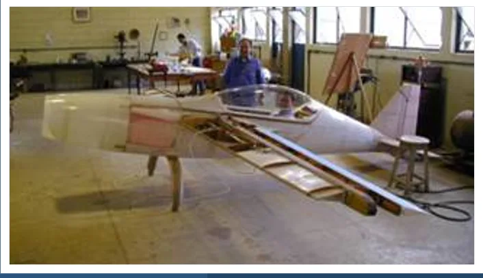

Research & Publications
Explore scientific research connected with CEA’s aircraft, experimental flight testing, parameter identification, and aerospace engineering education. All citations link directly to official conference proceedings and institutional repositories.
Direct Access to Official Proceedings
All publications link directly to primary publishers and official conference archives (ABCM / ICAS / AIAA). No documents are hosted locally.
State-Space Simulation of Passive Landing Gear Impact Response for Lightweight Fixed-Wing UAVs
2026 · Conference Paper · ICAS 2026, paper 0833 · Status: Accepted for ICAS 2026
Accepted for ICAS 2026Model-Based Integration of Flight-Test Evidence and Semi-Empirical Performance Models: The ACS-100 SORA Light Aircraft Case Study
2026 · Conference Paper · ICAS 2026, paper 0917 · Status: Accepted for ICAS 2026
Accepted for ICAS 2026An MBSE-Oriented Framework for Aerospace Systems Education: The CEA-UFMG Light-Aircraft Design-Build-Test Tradition
2026 · Conference Paper · ICAS 2026, paper 0933 · Status: Accepted for ICAS 2026
Accepted for ICAS 2026Collocation-Based Output-Error Method for Aircraft System Identification
2019 · AIAA Aviation 2019, paper 3087
View Official SourceDesign of Electric Propelled Aircraft
2019 · Aerospace Technology Congress / FT2019
View Official SourceEvolução do projeto aeronáutico no âmbito do Centro de Estudos Aeronáuticos (CEA-UFMG)
2018 · 1º Congresso Aeroespacial Brasileiro, edição especial Plêiade
Institutional RecordDesenvolvimento de uma técnica experimental de análise modal sem contato via excitação acústica
2016 · UFMG, Engenharia Mecânica
View Official SourceCFD-Based Study on Goldschmied Propulsion Concept Application for Drag Reduction
2014 · ICAS 2014, 0964
View Official SourceO curso de graduação em Engenharia Aeroespacial na UFMG: projeto pedagógico
2014 · COBENGE 2014
View Official SourceProjeto e análise de um sistema de assistência à pilotagem em 6 graus de liberdade para aeronaves leves
2012 · UFMG, Engenharia Mecânica
View Official SourceFlight Testing of a Light Airplane Using a Low-Cost Flight Test Instrumentation System – An Approach for System Identification
2011 · 22nd SFTE-EC Symposium
View Official SourceFlight Testing of a Light Sport Airplane, the ACS-100 SORA, Using a Low-Cost Flight Test Instrumentation System – An Approach for System Performances and Stability
2011 · 22nd SFTE-EC Symposium
View Official SourceDesign and Development of a Wireless Pitot Tube for Utilization in Flight Test
2011 · COBEM 2011
View Official SourceDevelopment and Evaluation of Strategies for Piloting Assistance for Light Aircraft
2010 · ICAS 2010, 5.10ST1
View Official SourceDesign and Characterization of a Telemetry System for Flight Tests in Light Aircrafts
2010 · ICAS 2010, 6.9.4
View Official SourceProjeto e caracterização de um sistema de telemetria para ensaios em vôo de aeronaves leves
2009 · UFMG, Engenharia Mecânica
View Official SourceDesenvolvimento de um medidor de ângulo de ataque para aeronaves de pequeno porte
2008 · UFMG, Engenharia Mecânica
View Official SourceComparison Between Conventional Flight Test Maneuvers for Aircraft Aerodynamic Derivatives Estimation
2005 · COBEM 2005
View Official SourceIdentification of the Aerodynamic and Control Derivatives and Flight Path Reconstruction of the SZD-50-3 Puchaz Sailplane
2005 · COBEM 2005
View Official SourceAspects of the Application of a Three Dimensional Panel Method Tool in the Design of a Light Aircraft
2005 · SAE 2005
View Official SourceObtenção de leis de controle de aeronaves para otimização de manobras complexas através de técnicas de penalização
2005 · SAE 2005
View Official SourceComparison Between Modern Procedures for Aerodynamic Calculation of Subsonic Airfoils for Application in Light Aircraft Designs
2005 · COBEM 2005
View Official SourceDevelopment of a Data Acquisition System for Light Airplanes Flight Tests
2005 · COBEM 2005
View Official SourceFlight Tests for Parameter Indentification in Light Airplanes
2005 · COBEM 2005
View Official SourceFlight Path Optimization for Competition Sailplanes through State Variables Parameterization
2005 · COBEM 2005
View Official SourceFlight Path Reconstruction Using the Unscented Kalman Filter Algorithm
2005 · COBEM 2005
View Official SourceLight Aircraft Instrumentation to Determine Performance, Stability and Control Characteristics in Flight Tests
2004 · SAE 2004
View Official SourceConsiderações sobre a utilização do método de elementos finitos para o cálculo do trem de pouso em material composto da aeronave CEA-309 MEHARI
2004 · SAE 2004
View Official SourceFlight Path Optimization for Competition Sailplanes through State Variables Parameterization
2004 · SAE 2004
View Official SourceMathematical Modeling for Optimization of Competition Sailplane Flight: A Preliminary Approach
2003 · SAE 2003
View Official SourceImplementação computacional do método dos painéis para análise tridimensional de conjuntos asa-fuselagem
2002 · SAE 2002
View Official SourceUma metodologia para o desenvolvimento de projeto de aeronaves leves subsônicas
2001 · UFMG, Escola de Engenharia, 310 p.
Institutional RecordUma metodologia para o desenvolvimento de aeronaves leves subsônicas
2001 · SAE 2001 no índice
View Official SourceDetalhes da aplicação do processo de construção hand-lay-up na aeronave CEA-308
2001 · SAE 2001
View Official SourceProjeto de uma aeronave classe FAI C1-a0 visando a maximização da velocidade máxima nivelada
2000 · SAE 2000
View Official SourceProjeto de uma aeronave leve utilitária e acrobática de alto desempenho
2000 · SAE 2000
View Official SourceUm procedimento alternativo para cálculo aerodinâmico de aeronaves leves subsônicas
1999 · SAE 1999
View Official SourceNo publication matches your search query.
CEA in the World
Selected institutional, national, and international media coverage documenting CEA aircraft development, engineering education, and world flight records.

Mehari: From Workshop to Public Flight
A detailed 2011 institutional report documents the technical origins, aerobatic calculations, and student construction of the CEA-309 Mehari.

The Legacy of Cláudio Barros
Estado de Minas obituary highlighting Cláudio Barros's foundational role in educating generations of Brazilian aerospace engineers through real aircraft.

Students Win Design Competition
A 2014 UFMG report follows a student aircraft-design team, highlighting competitive design engineering and research opportunities.

Anequim: 5 World Flight Records
The August 2015 campaign combined four world speed records and one climb record, connecting detailed aerodynamic design with verified flight performance.

CEA-308: Four World Records
Retrospective analysis of the CEA-308 racing aircraft, highlighting its four FAI world records — three speed records and one climb record — and high-efficiency aerodynamic innovations.

CEA’s Aircraft in Air & Space
Smithsonian feature following aircraft design, prototype construction, and the people behind CEA’s experimental flight projects.